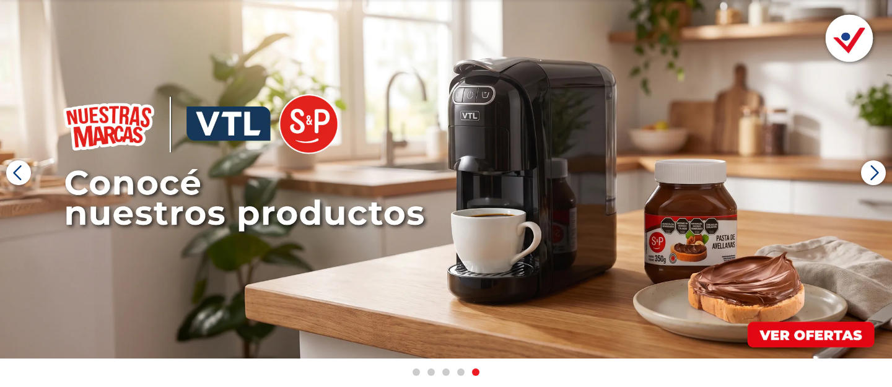
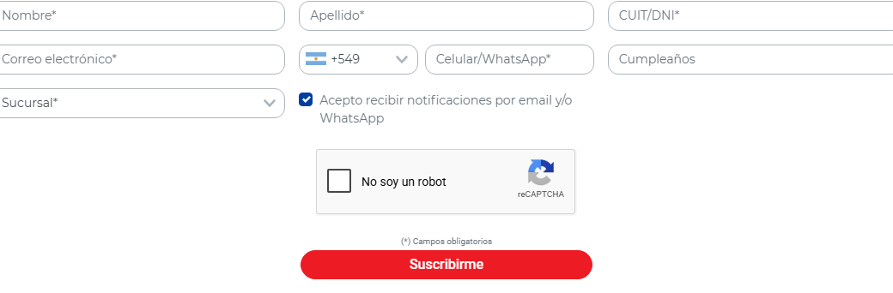
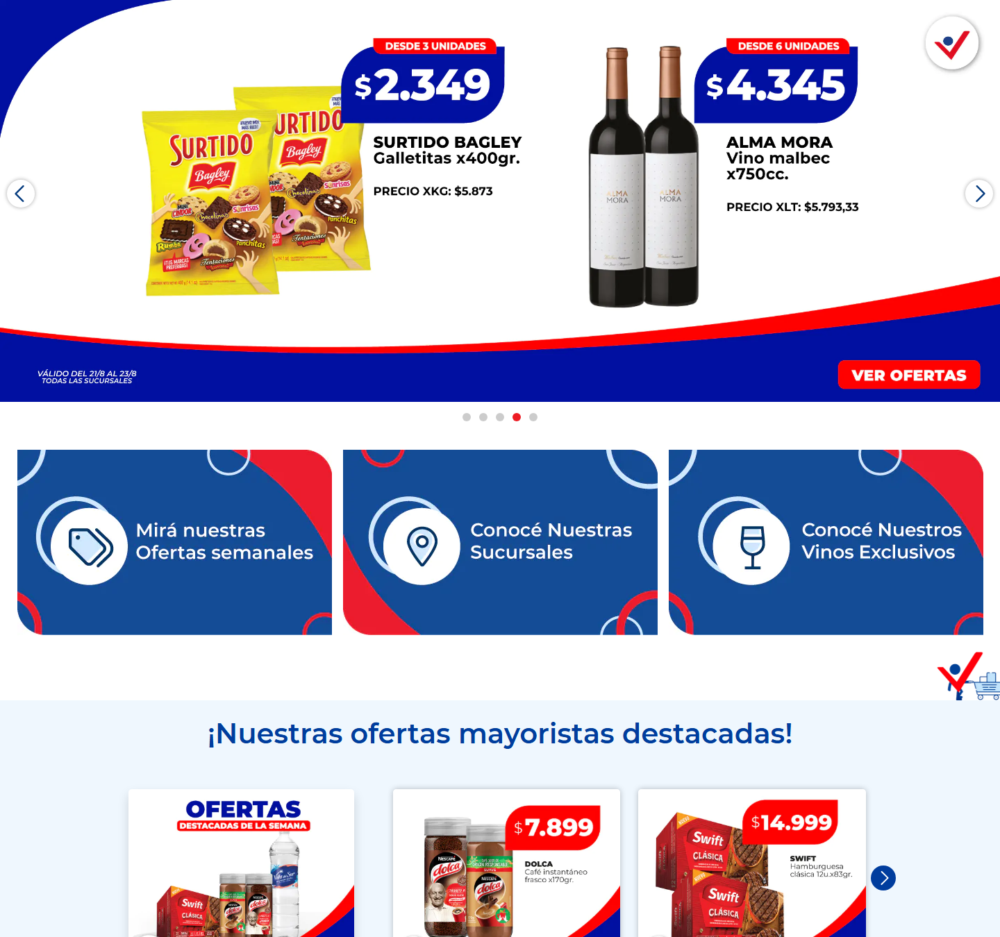
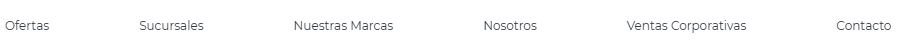
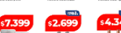
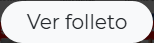
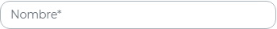
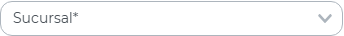
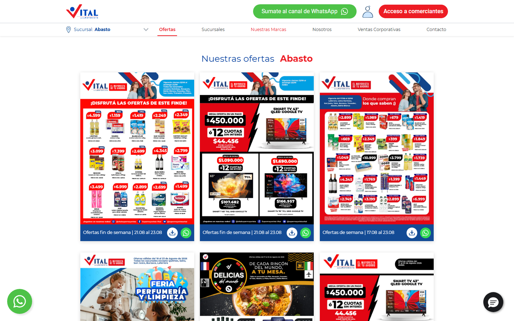

Generado a partir del análisis automatizado de https://www.vital.com.ar/ el 2026-08-23T14:10:35.377Z.
> Copiá todo lo que sigue y pasáselo a la IA que va a construir la aplicación. Los valores son mediciones reales del sitio del cliente, no estimaciones.
Construir una aplicación web equivalente en estructura y propósito a vital.com.ar, con mejor rendimiento, accesibilidad y mantenibilidad. Replicar la arquitectura de información y el tipo de componentes, no copiar textos, imágenes, logos ni marcas del original: usar contenido propio o placeholders.
Contexto del original: Supermayorista Vital - El mayorista de tu ahorro — Encontrá las mejores marcas, productos, promociones y descuentos todas las semanas a precios mayoristas. ¡En Vital todos pueden comprar!
Detectado en el original: jquery, tailwind, bootstrap, wordpress · Swiper, AOS, Google Fonts, Google Tag Manager, Google Analytics, Meta Pixel, Hotjar, Clarity
tailwind.config.Color
| Rol | Valor | Uso en el original |
|---|---|---|
| surface-1 (fondo base) | #ffffff | 15 elementos |
| surface-2 | #000000 (0.75) | 8 elementos |
| surface-3 | #134b95 | 8 elementos |
| surface-4 | #003d9e | 5 elementos |
| surface-5 | #000000 | 4 elementos |
| text-1 (texto base) | #212529 | 222 elementos |
| text-2 | #ffffff | 201 elementos |
| text-3 | #003d9e | 189 elementos |
| text-4 | #343a40 | 41 elementos |
| border-1 | #adb5bd | 9 elementos |
| border-2 | #f8f9fa | 8 elementos |
> Ajustar estos colores donde no lleguen a WCAG AA (ver sección 9) manteniendo la identidad.
Tipografía
| Elemento | font-size | weight | line-height |
|---|---|---|---|
| body | 16px | 400 | 24px |
| h1 | 40px | 500 | 48px |
| h2 | 40px | 600 | 48px |
| h3 | 40px | 600 | 48px |
| h4 | 40px | 600 | 48px |
| button | 16px | 400 | 24px |
| small | 12.8px | 400 | 19.2px |
Fuentes propias declaradas: Roboto (400, font-display: swap) · Roboto (500, font-display: swap) · Roboto (700, font-display: swap) · Montserrat (400, font-display: swap). Cargarlas con font-display: swap y preload solo la del hero.
Consistencia del original: 3 familias, 9 tamaños, 5 pesos distintos. La escala es acotada: mantenerla.
Espaciado, radios y elevación
rgba(0, 0, 0, 0.15) 0px 2px 10px 0px · rgba(0, 0, 0, 0.15) 0px 8px 16px 0px · rgba(0, 0, 0, 0.25) 0px 0px 8px 0px (8 distintas: normalizar a 3 niveles de elevación)Definir todo esto como variables CSS / tailwind.config y prohibir valores mágicos fuera de la escala.
| Tipo de página | Ruta del original | Secciones | Componentes destacados | Formularios |
|---|---|---|---|---|
| Home | / | 8 | 69 carruseles | 1 |
| Contacto / sucursales | /contactos/ | 2 | — | 1 |
| Institucional | /empresas/ | 7 | — | 1 |
| Ayuda / legales | /ayudaresvital/ | 1 | — | 0 |
Construir una ruta por cada tipo de página listado, con su layout propio y componentes compartidos.
Contacto / sucursales — secciones en orden: Comunicate con nosotros → div.col-md-6.col-lg-auto.m-3
Institucional — secciones en orden: img.img-fluid → img.img-fluid → img.img-fluid → img.img-fluid → img.img-fluid → img.img-fluid → Nuestro propósito
Ayuda / legales — secciones en orden: ¡Desafío cumplido!
| # | Sección | Encabezado | Alto | Layout | Contenido |
|---|---|---|---|---|---|
| 1 | div#home-slider.swiper-container.swiper-container-initialized.swiper-container-horizontal | — | 624px (0.69 vh) | block | 7 img, 7 links |
| 2 | div.d-flex.flex-column.flex-sm-row | — | 267px (0.3 vh) | flex, 3 col | 3 img, 3 links |
| 3 | img.img-fluid.lazy.loaded | — | 70px (0.08 vh) | inline | — |
| 4 | div.container | ¡Nuestras ofertas mayoristas destacadas! | 375px (0.42 vh) | block | 4 img, 4 links |
| 5 | div.row.mx-n4 | — | 419px (0.47 vh) | flex, 2 col | 3 img, 3 links |
| 6 | div.container | — | 288px (0.32 vh) | block | 7 links, 1 btn |
| 7 | section.home-atributo-marcas.bg-blue-100.pt-5 | — | 72px (0.08 vh) | block | — |
| 8 | section.home-medios-de-pago.py-4 | — | 160px (0.18 vh) | block | 21 img |
Alto total del home: 5035px (5.6 viewports). 8 bloques de primer nivel.
Navegación principal
position: relative.Footer: 0 columnas, 9 links, 5 redes.
Capas fijas: chat (fixed, z-index 100000) · otro (fixed, z-index auto). Definir una escala de z-index documentada.
| Componente | Cantidad en el original | Nota de implementación |
|---|---|---|
| images | 81 | componente de imagen optimizada (AVIF/WebP + sizes) |
| links | 73 | links internos con el router, externos con rel="noopener" |
| carousels | 69 | accesible por teclado, con pausa; considerar scroll-snap en lugar de librería |
| svg | 25 | sprite o componentes de ícono, no SVG inline duplicado |
| inputs | 21 | componente Input con label obligatorio |
| buttons | 16 | un solo componente Button con variantes |
| modals | 11 | <dialog> nativo o Radix, con foco atrapado y cierre por Escape |
| pagination | 6 | links reales navegables, no solo JS |
| videosEmbeds | 5 | carga diferida con póster; no autoplay con sonido |
| forms | 1 | validación accesible con mensajes asociados al campo |
| badges | 1 | componente Badge con variantes semánticas |
Variantes de botón detectadas (usar como base del componente Button)
| Variante | Usos | Fondo | Texto | Radio | Padding | Tamaño de fuente | Peso |
|---|---|---|---|---|---|---|---|
| primary | 8 | rgba(0, 0, 0, 0) | rgb(248, 249, 250) | 800px | 4px 24px | 20px | 300 |
| secondary | 1 | rgb(77, 194, 71) | rgb(255, 255, 255) | 30px | 8px 24px | 16px | 400 |
| ghost | 1 | rgb(237, 28, 36) | rgb(255, 255, 255) | 800px | 6px 12px | 16px | 500 |
| alt-2 | 1 | rgb(237, 28, 36) | rgb(255, 255, 255) | 800px | 6px 24px | 16px | 500 |
| alt-3 | 1 | rgb(237, 28, 36) | rgb(255, 255, 255) | 800px | 4px 32px | 16px | 500 |
| alt-4 | 1 | rgb(26, 27, 30) | rgb(0, 0, 0) | 50% | 0px | 16px | 400 |
El original tiene 6+ firmas de estilo distintas para botones: consolidar en 3-4 variantes (primary, secondary, ghost, destructive) × tamaños (sm, md, lg).
Formularios del original
https://webto.salesforce.com/servlet/servlet.WebToLead?encoding=UTF-8&orgId=00DDn000002Ey8t, submit "Suscribirme": captchasettings (hidden), oid (hidden), retURL (hidden), recordType (hidden), CampaignID (hidden), leadsource (hidden), firstname (text), lastname (text), 00NDn00000aYe5l (number), email (email), text (text), 00NUZ000001U20b (hidden), newsletterTelefono (tel), mobile (hidden), 00NUZ000002lKa2 (text), 00NDn00000dbbLf (select), newsletterNotificationscheckbox (checkbox), 00NUZ000004RcIE (hidden), 00NUZ000009iS1q (hidden), g-recaptcha-response (text)Carruseles: 8 en el home (custom/desconocido, Swiper), con 7/7/7/0/0/0/0/0 slides.
| Ancho | Cards por fila | Links de nav visibles | Alto de header | h1 |
|---|---|---|---|---|
| 360px | — | 10 | 163 | 40px |
| 390px | — | 10 | 163 | 12px |
| 768px | — | 5 | 139 | 40px |
| 1024px | — | 5 | 101 | 40px |
| 1280px | — | 5 | 101 | 40px |
| 1440px | — | 5 | 101 | 40px |
| 1920px | — | 5 | 101 | 40px |
Requisito duro: ningún breakpoint entre 320px y 1920px puede tener scroll horizontal.
:hover cambian: color, background-color, text-decoration-color, text-decoration-line, text-decoration-style@keyframes declarados.IntersectionObserver liviano, animando solo transform y opacity.prefers-reduced-motion.lang="es". Formatear moneda y fechas con Intl.<label for> real, no solo placeholder.aria-label.:focus-visible claro.title.width/height (causan CLS). Declarar siempre las dimensiones o usar next/image.srcset/sizes.loading="lazy" fuera del viewport inicial y priority solo para la del hero.Recortes reales de los componentes y zonas descriptos arriba (mismo orden que las tablas de la sección 5):
Carrusel Footer Primer formulario Header Primera sección / hero Navegación Botón variante 1 Botón variante 3 Botón variante 4 Botón variante 5 Botón variante 6 Foco de teclado en el botón principal Botón 1 en hover Botón 3 en hover Input variante 1 Input variante 2 Input variante 3 Input variante 4 Menú desplegado









| Métrica | Original | Objetivo |
|---|---|---|
| LCP | sin dato | < 2500 ms |
| CLS | 0.6563 | < 0.1 |
| FCP | 1072 ms | < 1800 ms |
| TTFB | 301 ms | < 800 ms |
| Requests | 511 | < 307 |
| Peso transferido | 16348 KB | < 9809 KB |
| Nodos DOM | 821 | < 1200 |
| Imágenes sin alt | 0 | 0 |
| Inputs sin label | 9 | 0 |
| Fallos de contraste AA | 2 | 0 |
| Overflow horizontal | no | no, en ningún breakpoint |
| Errores de consola | 6 | 0 |
Línea base de Lighthouse del sitio actual (perfil mobile, con throttling — estos son los números a superar):
| Categoría / métrica | Original | Objetivo |
|---|---|---|
| Performance | 16/100 | ≥ 90 |
| Accesibilidad | 83/100 | ≥ 95 |
| Best practices | 54/100 | ≥ 95 |
| SEO | 92/100 | ≥ 95 |
| LCP | 22.1 s | < 2,5 s |
| TBT | 1,430 ms | < 200 ms |
| CLS | 0.571 | < 0,1 |
| Speed Index | 11.9 s | < 3,4 s |
Oportunidades que Lighthouse marca en el original y que la nueva app no debe repetir:
npm install && npm run dev.No incluir: logos, marcas, fotos ni textos del sitio original. Usar placeholders propios.